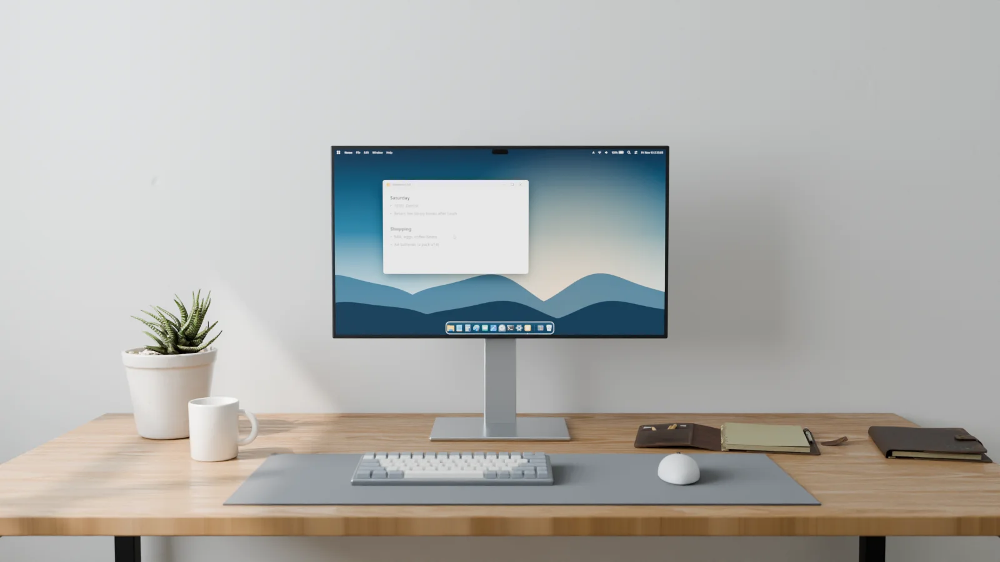

Frostbar
Windows 11, the macOS way.
A menu bar, a Dock, search and Control Center that run on top of the Windows you already have.
Download for Windows 11Source on GitHub
Free under the MIT licence. Windows 11 22H2 or later, 64-bit.
Menu bar
System menu
Frostbar's settings, your recent items, and sleep, restart and shut down.
The front app's menus
Its name and its menus sit at the top of the screen, whichever app you are in.
Shortcuts beside the commands
For common apps, each command shows the keys that run it.
Status and controls
Wi-Fi, sound, battery
Each opens a panel of its own. Hold Ctrl and drag to put them in your order.
Clock and notifications
Click the clock for Windows' notifications, grouped by app.
Control Center
Wi-Fi, Bluetooth, Focus, brightness, volume and what is playing, in one place.
Glass
Rims that catch the light
Panels are translucent glass, in light and dark. On Windows 11 24H2 and later, their edges bend what is behind them.
Dock
Yours to arrange
Drag to reorder. Bottom, left or right, or hidden until you need it.
Running apps
An icon bounces while its app opens, and a dot marks what is open. Progress and badges show on the icon.
Magnification
Icons grow under the pointer, as much as you set.
Search
Alt+Space
Opens search from anywhere. The shortcut is yours to change.
Apps, files, actions, clipboard
The buttons narrow the search to one kind.
Answers as you type
Sums and unit conversions, without opening anything.
Settings
Change almost anything
Light or dark, glass, sizes, shortcuts, hot corners, what the menu bar shows.
One window
Laid out like macOS's System Settings, with a search field.
Install
Download the zip, run setup.cmd, and choose whether Frostbar hides the Windows taskbar. Updating is the same; your settings stay.
Before you install
- Also in it
- An app grid with pages and folders, a window overview with Windows' virtual desktops along the top, hot corners, and a notification centre that groups notifications by app.
- Requirements
- Windows 11 22H2 (build 22621) or later, 64-bit (x64). The .NET runtime is in the download. The author has tested it on one PC, with Windows 11 26H2.
- Install
-
- Download
Frostbar-<version>-<commit>-win-x64.zipfrom Releases. - Right-click the zip, choose Properties, tick Unblock, then OK.
- Extract it and double-click
setup.cmd. If Windows says it protected your PC, choose More info, then Run anyway: the app is not signed.
- Download
- If the taskbar does not come back
- Double-click
%LOCALAPPDATA%\Programs\Frostbar\restore-taskbar.cmd. It works without Frostbar running. - Uninstall
- Double-click
uninstall.cmdin the same folder. It brings the taskbar back and removes the program, its Start menu entry and its start at sign-in. - Privacy
- Frostbar sends nothing over the network. Notifications, clipboard history and recent files are read on your PC only to be shown.
- Source
- C# and WPF, under the MIT licence, on GitHub. English and Japanese.